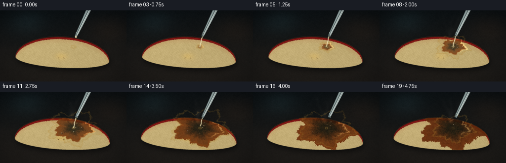
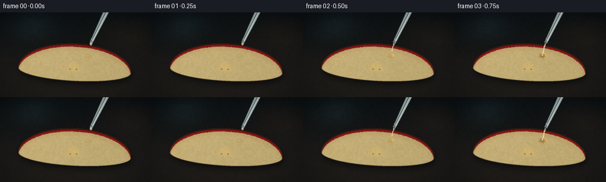

CODING AGENTS AS PIXEL WORLD MODELS
traex/DeepSeek-V4.1-Flash · phygen_152
点击播放 · 原生 RGB 像素
逐轮保存的候选
回放视频、检查图与代码变化。
每份候选均可单独播放。实际图片检查记录在下方工具轨迹中。
候选 01播放与检查图
点击播放 · 原生 RGB 像素


展开代码变化
--- 上一保存版本
+++ 本次保存版本
@@ -0,0 +1,660 @@
+from pathlib import Path
+import math
+
+import cv2
+import numpy as np
+from PIL import Image, ImageDraw, ImageFilter
+from scipy.ndimage import gaussian_filter
+
+import artifact_io
+
+
+CASE_DIR = Path(__file__).resolve().parent
+WIDTH, HEIGHT = 256, 144
+N_FRAMES = 20
+FPS = 4.0
+SS = 3
+HW, HH = WIDTH * SS, HEIGHT * SS
+
+
+def clamp01(value):
+ return np.clip(value, 0.0, 1.0)
+
+
+def smoothstep(edge0, edge1, value):
+ t = clamp01((value - edge0) / (edge1 - edge0))
+ return t * t * (3.0 - 2.0 * t)
+
+
+def mix(a, b, amount):
+ amount = np.asarray(amount, dtype=np.float32)
+ if amount.ndim == 2:
+ amount = amount[:, :, None]
+ return a * (1.0 - amount) + b * amount
+
+
+def soft_noise(seed, scales=(2, 4, 8, 16, 32), weights=None):
+ rng = np.random.default_rng(seed)
+ if weights is None:
+ weights = [1.0 / (index + 1) for index in range(len(scales))]
+ total = np.zeros((HH, HW), dtype=np.float32)
+ norm = 0.0
+ for scale, weight in zip(scales, weights):
+ sh = max(2, int(math.ceil(HH / scale)))
+ sw = max(2, int(math.ceil(HW / scale)))
+ small = rng.random((sh, sw), dtype=np.float32)
+ field = cv2.resize(small, (HW, HH), interpolation=cv2.INTER_CUBIC)
+ total += weight * field
+ norm += weight
+ return total / norm
+
+
+def shift_field(field, dx, dy):
+ matrix = np.float32([[1.0, 0.0, dx], [0.0, 1.0, dy]])
+ return cv2.warpAffine(
+ field,
+ matrix,
+ (HW, HH),
+ flags=cv2.INTER_LINEAR,
+ borderMode=cv2.BORDER_REFLECT,
+ )
+
+
+def rgba_image_to_array(image):
+ return np.asarray(image, dtype=np.float32) / 255.0
+
+
+def screen_blend(base, layer, opacity):
+ if np.ndim(opacity) == 2:
+ opacity = opacity[:, :, None]
+ return 1.0 - (1.0 - base) * (1.0 - layer * opacity)
+
+
+def draw_pipette(progress):
+ canvas = Image.new("RGBA", (HW, HH), (0, 0, 0, 0))
+ draw = ImageDraw.Draw(canvas)
+
+ p0 = np.array([184.0, -12.0])
+ p1 = np.array([153.5, 51.5])
+ v = p1 - p0
+ length = np.linalg.norm(v)
+ n = np.array([-v[1], v[0]]) / length
+
+ def pt(t, offset=0.0):
+ return tuple(((p0 + v * t + n * offset) * SS).tolist())
+
+ body = [pt(0.0, -4.6), pt(1.0, -2.0), pt(1.0, 2.0), pt(0.0, 4.6)]
+ draw.polygon(body, fill=(198, 220, 218, 174))
+
+ left_edge = [pt(0.0, -4.7), pt(1.0, -2.15)]
+ right_edge = [pt(0.0, 4.7), pt(1.0, 2.15)]
+ draw.line(left_edge, fill=(220, 239, 235, 210), width=max(1, int(0.8 * SS)))
+ draw.line(right_edge, fill=(69, 85, 86, 210), width=max(1, int(0.7 * SS)))
+
+ draw.line([pt(0.03, -2.2), pt(0.96, -0.9)], fill=(247, 255, 250, 215), width=SS)
+ draw.line([pt(0.04, -0.5), pt(0.94, 0.4)], fill=(121, 160, 161, 95), width=SS)
+
+ ring_y = 0.91
+ draw.line([pt(ring_y, -2.8), pt(ring_y, 2.8)], fill=(218, 235, 229, 195), width=SS)
+ draw.line([pt(0.96, -2.5), pt(0.96, 2.5)], fill=(71, 83, 82, 185), width=SS)
+
+ tip_x, tip_y = p1 * SS
+ draw.ellipse(
+ (tip_x - 1.4 * SS, tip_y - 1.1 * SS, tip_x + 1.4 * SS, tip_y + 1.1 * SS),
+ fill=(195, 215, 208, 165),
+ outline=(59, 74, 74, 215),
+ width=SS,
+ )
+
+ # A meniscus bead makes the first frame read as the instant before pouring.
+ if progress < 0.18:
+ bead = 1.0 - smoothstep(0.02, 0.18, progress)
+ cx = tip_x + 0.2 * SS
+ cy = tip_y + (1.8 + 1.3 * (1.0 - bead)) * SS
+ rx = (1.2 + 0.6 * bead) * SS
+ ry = (1.5 + 1.0 * bead) * SS
+ draw.ellipse(
+ (cx - rx, cy - ry, cx + rx, cy + ry),
+ fill=(238, 221, 170, int(190 * bead)),
+ outline=(255, 246, 211, int(205 * bead)),
+ width=max(1, SS // 2),
+ )
+ draw.ellipse(
+ (cx - 0.45 * rx, cy - 0.7 * ry, cx + 0.1 * rx, cy - 0.1 * ry),
+ fill=(255, 255, 242, int(225 * bead)),
+ )
+
+ return canvas
+
+
+def draw_stream(progress):
+ canvas = Image.new("RGBA", (HW, HH), (0, 0, 0, 0))
+ draw = ImageDraw.Draw(canvas)
+
+ flow_in = smoothstep(0.035, 0.15, progress)
+ flow_out = 1.0 - smoothstep(0.70, 0.84, progress)
+ flow = min(flow_in, flow_out)
+ if flow <= 0.01:
+ return canvas
+
+ start = np.array([153.5, 52.2])
+ end = np.array([148.4, 73.5])
+ reach = flow_in * flow_out
+ samples = 52
+ left = []
+ right = []
+ for i in range(samples + 1):
+ u = i / samples
+ y = start[1] + (end[1] - start[1]) * u
+ x = start[0] + (end[0] - start[0]) * u
+ x += 0.42 * math.sin(u * 9.0 + progress * 12.0) * math.sin(math.pi * u)
+ width = (1.05 + 0.20 * math.sin(u * 17.0 + progress * 20.0)) * flow
+ visible = u <= reach
+ if visible:
+ left.append(((x - width) * SS, y * SS))
+ right.append(((x + width) * SS, y * SS))
+
+ if len(left) > 1:
+ polygon = left + list(reversed(right))
+ draw.polygon(polygon, fill=(224, 207, 146, 176))
+ draw.line(left, fill=(255, 248, 215, 205), width=max(1, SS // 2))
+ draw.line(right, fill=(126, 112, 69, 190), width=max(1, SS // 2))
+
+ core = []
+ for i in range(samples + 1):
+ u = i / samples
+ if u > reach:
+ break
+ y = start[1] + (end[1] - start[1]) * u
+ x = start[0] + (end[0] - start[0]) * u
+ x += 0.42 * math.sin(u * 9.0 + progress * 12.0) * math.sin(math.pi * u)
+ core.append((x * SS, y * SS))
+ if len(core) > 1:
+ draw.line(core, fill=(255, 255, 236, 220), width=max(1, SS // 2))
+
+ # Small traveling highlights keep the liquid from looking like a solid rod.
+ for k in range(4):
+ phase = (progress * 2.8 + k * 0.27) % 1.0
+ if phase > reach:
+ continue
+ x = start[0] + (end[0] - start[0]) * phase
+ y = start[1] + (end[1] - start[1]) * phase
+ x += 0.42 * math.sin(phase * 9.0 + progress * 12.0) * math.sin(math.pi * phase)
+ radius = 0.38 * SS
+ draw.ellipse(
+ (x * SS - radius, y * SS - radius * 1.8, x * SS + radius, y * SS + radius * 1.8),
+ fill=(255, 255, 241, 210),
+ )
+
+ return canvas
+
+
+def make_smoke_layer(progress):
+ smoke_strength = smoothstep(0.17, 0.45, progress)
+ if smoke_strength <= 0.001:
+ return np.zeros((HH, HW, 3), dtype=np.float32), np.zeros((HH, HW), dtype=np.float32)
+
+ canvas = Image.new("RGBA", (HW, HH), (0, 0, 0, 0))
+ draw = ImageDraw.Draw(canvas)
+ rng = np.random.default_rng(870 + int(round(progress * 19)))
+
+ for wisp in range(10):
+ start_x = 145.0 + rng.normal(0.0, 3.8)
+ start_y = 66.0 + rng.normal(0.0, 2.2)
+ top_y = 5.0 + rng.uniform(0.0, 17.0)
+ bend = rng.uniform(-19.0, 17.0)
+ sway = rng.uniform(2.0, 7.0)
+ phase = rng.uniform(0.0, math.tau)
+ alpha = int((5 + 13 * smoke_strength) * rng.uniform(0.7, 1.25))
+ width = rng.uniform(1.0, 3.2) * SS
+
+ points = []
+ for j in range(25):
+ u = j / 24.0
+ y = start_y + (top_y - start_y) * u
+ x = start_x + bend * (u ** 1.45)
+ x += sway * math.sin(u * 4.4 + phase + progress * 3.5) * u
+ x += 0.8 * math.sin(u * 13.0 + phase * 0.7) * u
+ points.append((x * SS, y * SS))
+
+ for j in range(len(points) - 1):
+ u = j / (len(points) - 1)
+ fade = int(alpha * (0.30 + 0.70 * u) * (1.0 - 0.45 * u))
+ draw.line(
+ [points[j], points[j + 1]],
+ fill=(206, 202, 188, max(0, fade)),
+ width=max(1, int(width * (0.55 + 0.65 * u))),
+ )
+
+ # A few brighter curls close to the hot reaction zone.
+ for wisp in range(4):
+ base_x = 143.0 + rng.normal(0.0, 2.5)
+ base_y = 64.0 + rng.normal(0.0, 1.5)
+ points = []
+ for j in range(16):
+ u = j / 15.0
+ y = base_y - u * rng.uniform(19.0, 32.0)
+ x = base_x + 5.5 * math.sin(u * 5.0 + wisp * 1.7 + progress * 4.0) * u
+ points.append((x * SS, y * SS))
+ draw.line(points, fill=(232, 223, 204, int(8 + 14 * smoke_strength)), width=SS)
+
+ blurred = canvas.filter(ImageFilter.GaussianBlur(2.3 * SS))
+ arr = rgba_image_to_array(blurred)
+ color = arr[:, :, :3]
+ alpha = arr[:, :, 3]
+
+ # Fade the vapor before it reaches the top border.
+ y = np.arange(HH, dtype=np.float32)[:, None] / SS
+ vertical_fade = smoothstep(2.0, 18.0, y) * (1.0 - 0.55 * smoothstep(70.0, 96.0, y))
+ return color, alpha * vertical_fade * smoke_strength
+
+
+def bubble_specs():
+ rng = np.random.default_rng(405)
+ specs = []
+ for index in range(24):
+ specs.append(
+ {
+ "angle": rng.uniform(0.0, math.tau),
+ "radial": rng.uniform(0.05, 0.78),
+ "birth": rng.uniform(0.17, 0.77),
+ "life": rng.uniform(0.13, 0.34),
+ "radius": rng.uniform(0.55, 1.85),
+ "phase": rng.uniform(0.0, math.tau),
+ }
+ )
+ return specs
+
+
+BUBBLES = bubble_specs()
+
+
+def draw_bubbles(progress, wet_radius):
+ canvas = Image.new("RGBA", (HW, HH), (0, 0, 0, 0))
+ draw = ImageDraw.Draw(canvas)
+ impact = np.array([148.5, 73.2])
+
+ for index, bubble in enumerate(BUBBLES):
+ age = progress - bubble["birth"]
+ if age < 0.0 or age > bubble["life"]:
+ continue
+ life_u = age / bubble["life"]
+ pop = smoothstep(0.0, 0.15, life_u) * (1.0 - smoothstep(0.72, 1.0, life_u))
+ if pop < 0.02:
+ continue
+
+ spread = bubble["radial"] * wet_radius * (0.70 + 0.30 * min(1.0, age * 4.0))
+ drift = 0.8 * math.sin(bubble["phase"] + progress * 8.0)
+ x = impact[0] + math.cos(bubble["angle"]) * spread * 1.30 + drift
+ y = impact[1] + math.sin(bubble["angle"]) * spread * 0.77
+ r = bubble["radius"] * (0.60 + 0.40 * pop) * (0.9 + 0.12 * math.sin(progress * 20 + index))
+ if r < 0.25:
+ continue
+
+ x *= SS
+ y *= SS
+ r *= SS
+ alpha = int(225 * pop)
+ draw.ellipse(
+ (x - r, y - r * 1.12, x + r, y + r * 1.12),
+ fill=(111, 74, 31, int(55 * pop)),
+ outline=(39, 25, 14, alpha),
+ width=max(1, int(0.55 * SS)),
+ )
+ draw.arc(
+ (x - r * 0.78, y - r * 0.84, x + r * 0.78, y + r * 0.84),
+ 205,
+ 322,
+ fill=(255, 236, 170, int(235 * pop)),
+ width=max(1, int(0.45 * SS)),
+ )
+ hr = max(0.55, r * 0.22)
+ draw.ellipse(
+ (x - r * 0.45 - hr, y - r * 0.55 - hr, x - r * 0.45 + hr, y - r * 0.55 + hr),
+ fill=(255, 250, 222, int(245 * pop)),
+ )
+
+ return canvas
+
+
+def build_background():
+ y = np.broadcast_to(np.arange(HH, dtype=np.float32)[:, None] / SS, (HH, HW)).copy()
+ x = np.broadcast_to(np.arange(HW, dtype=np.float32)[None, :] / SS, (HH, HW)).copy()
+ top = np.array([0.050, 0.060, 0.064], dtype=np.float32)
+ bottom = np.array([0.135, 0.112, 0.091], dtype=np.float32)
+ vertical = np.clip((y - 4.0) / 140.0, 0.0, 1.0)
+ bg = top * (1.0 - vertical[:, :, None]) + bottom * vertical[:, :, None]
+
+ # Broad, defocused lab reflections.
+ glow = np.exp(
+ -((x - 55.0) ** 2 / (2.0 * 26.0 ** 2) + (y - 24.0) ** 2 / (2.0 * 17.0 ** 2))
+ )
+ bg += glow[:, :, None] * np.array([0.025, 0.047, 0.052], dtype=np.float32)
+ warm = np.exp(
+ -((x - 221.0) ** 2 / (2.0 * 34.0 ** 2) + (y - 39.0) ** 2 / (2.0 * 22.0 ** 2))
+ )
+ bg += warm[:, :, None] * np.array([0.042, 0.022, 0.008], dtype=np.float32)
+
+ broad = soft_noise(221, scales=(5, 12, 28, 55), weights=(1.0, 0.6, 0.32, 0.18))
+ fine = soft_noise(223, scales=(2, 4, 8, 16), weights=(0.8, 0.55, 0.3, 0.18))
+ bg *= (0.88 + 0.16 * broad[:, :, None])
+ bg += (fine[:, :, None] - 0.5) * 0.018
+
+ # Stone-like shallow surface band with fine directional marks.
+ surface = smoothstep(68.0, 83.0, y)
+ stone = np.array([0.115, 0.099, 0.085], dtype=np.float32)
+ stone_field = soft_noise(231, scales=(3, 6, 14, 35), weights=(0.8, 0.6, 0.4, 0.2))
+ bg = mix(bg, stone * (0.84 + 0.24 * stone_field[:, :, None]), surface * 0.40)
+
+ return bg
+
+
+def build_apple_fields():
+ x = np.broadcast_to(np.arange(HW, dtype=np.float32)[None, :] / SS, (HH, HW)).copy()
+ y = np.broadcast_to(np.arange(HH, dtype=np.float32)[:, None] / SS, (HH, HW)).copy()
+ cx, cy = 126.0, 98.0
+ rx, ry, belly = 95.0, 45.0, 18.0
+ angle = math.radians(-3.0)
+ ca, sa = math.cos(angle), math.sin(angle)
+ dx, dy = x - cx, y - cy
+ xr = cx + ca * dx - sa * dy
+ yr = cy + sa * dx + ca * dy
+ u = (xr - cx) / rx
+ inside_u = np.clip(1.0 - u * u, 0.0, 1.0)
+ root = np.sqrt(inside_u)
+ y_top = cy - ry * root
+ y_bottom = cy + belly * root
+
+ edge_noise = soft_noise(311, scales=(3, 7, 16, 30), weights=(0.8, 0.5, 0.28, 0.15))
+ top_warp = (edge_noise - 0.5) * 1.15
+ apple_mask = (np.abs(u) <= 1.0) & (yr >= y_top + top_warp) & (yr <= y_bottom)
+ apple_mask = apple_mask.astype(np.float32)
+ apple_mask = gaussian_filter(apple_mask, 0.38 * SS)
+ apple_mask = np.clip(apple_mask, 0.0, 1.0)
+
+ skin_width = 5.1 + (soft_noise(317, scales=(4, 9, 20), weights=(1.0, 0.5, 0.2)) - 0.5) * 1.6
+ skin = apple_mask * (1.0 - smoothstep(skin_width - 1.0, skin_width + 0.8, yr - y_top))
+ skin = np.clip(skin, 0.0, 1.0)
+
+ d_top = yr - y_top
+ outer_edge = apple_mask * (1.0 - smoothstep(0.6, 1.9, d_top))
+ return {
+ "x": x,
+ "y": y,
+ "xr": xr,
+ "yr": yr,
+ "u": u,
+ "cx": cx,
+ "cy": cy,
+ "rx": rx,
+ "ry": ry,
+ "top": y_top,
+ "bottom": y_bottom,
+ "mask": apple_mask,
+ "skin": skin,
+ "outer_edge": outer_edge,
+ }
+
+
+def apple_color(frame_progress, fields):
+ x, y = fields["x"], fields["y"]
+ xr, yr = fields["xr"], fields["yr"]
+ cx, cy = fields["cx"], fields["cy"]
+ mask = fields["mask"]
+ skin = fields["skin"]
+
+ fine = soft_noise(401, scales=(1.5, 3, 6, 12, 25), weights=(0.7, 0.75, 0.55, 0.3, 0.16))
+ coarse = soft_noise(409, scales=(8, 18, 42), weights=(0.9, 0.45, 0.22))
+ fiber = np.sin((xr - cx) * 1.18 + (yr - cy) * 0.31 + fine * 4.2)
+ fiber *= np.sin((xr - cx) * 0.19 - (yr - cy) * 1.42 + coarse * 3.0)
+
+ core_dx = (xr - 123.5) / 15.0
+ core_dy = (yr - 93.0) / 9.0
+ core_glow = np.exp(-(core_dx * core_dx + core_dy * core_dy) * 1.8)
+ edge_glow = np.exp(-((yr - fields["top"]) / 9.0) ** 2)
+
+ light = 0.93 - 0.055 * (x / WIDTH) - 0.030 * (y / HEIGHT)
+ flesh = np.empty((HH, HW, 3), dtype=np.float32)
+ flesh[:, :, 0] = 0.845
+ flesh[:, :, 1] = 0.750
+ flesh[:, :, 2] = 0.510
+ flesh += ((fine - 0.5) * 0.070 + (coarse - 0.5) * 0.045 + fiber * 0.018)[:, :, None]
+ flesh += core_glow[:, :, None] * np.array([0.075, 0.045, -0.020], dtype=np.float32)
+ flesh += edge_glow[:, :, None] * np.array([0.025, 0.035, 0.005], dtype=np.float32)
+ flesh *= light[:, :, None]
+
+ # A restrained pink blush just below the red skin.
+ blush = mask * (1.0 - smoothstep(4.0, 17.0, yr - fields["top"])) * 0.20
+ flesh = mix(flesh, np.array([0.62, 0.35, 0.24], dtype=np.float32), blush)
+
+ # Central vascular texture, kept faint so the burning patch remains dominant.
+ core_ring = np.exp(-(((xr - 123.5) / 11.0) ** 2 + ((yr - 93.0) / 7.0) ** 2))
+ core_ring *= 0.45 + 0.55 * (0.5 + 0.5 * np.sin(np.arctan2(yr - 93.0, xr - 123.5) * 9.0))
+ flesh = mix(flesh, np.array([0.74, 0.61, 0.36], dtype=np.float32), core_ring * 0.16)
+
+ skin_col = np.empty((HH, HW, 3), dtype=np.float32)
+ skin_col[:, :, 0] = 0.48
+ skin_col[:, :, 1] = 0.055
+ skin_col[:, :, 2] = 0.050
+ skin_col += (fine[:, :, None] - 0.5) * np.array([0.085, 0.025, 0.020], dtype=np.float32)
+ skin_sheen = np.exp(-((yr - fields["top"] - 2.5) / 1.8) ** 2)
+ skin_col += skin_sheen[:, :, None] * np.array([0.16, 0.055, 0.040], dtype=np.float32)
+ skin_col = mix(skin_col, np.array([0.19, 0.026, 0.020], dtype=np.float32), 0.25)
+
+ color = mix(flesh, skin_col, skin[:, :, None])
+ color = mix(color, np.array([0.125, 0.030, 0.020], dtype=np.float32), fields["outer_edge"][:, :, None] * 0.88)
+
+ # Small seeds help identify the cut fruit at thumbnail scale.
+ seed_centers = ((118.0, 96.5, -0.38), (129.0, 96.0, 0.38))
+ for sx, sy, rot in seed_centers:
+ dxs = xr - sx
+ dys = yr - sy
+ ca, sa = math.cos(rot), math.sin(rot)
+ ex = ca * dxs + sa * dys
+ ey = -sa * dxs + ca * dys
+ seed = np.exp(-((ex / 1.55) ** 4 + (ey / 0.72) ** 4) * 1.8)
+ color = mix(color, np.array([0.22, 0.115, 0.045], dtype=np.float32), seed * 0.72)
+ seed_hi = np.exp(-(((ex + 0.45) / 0.55) ** 2 + ((ey + 0.25) / 0.32) ** 2) * 2.0)
+ color = mix(color, np.array([0.62, 0.41, 0.19], dtype=np.float32), seed_hi * 0.38)
+
+ return color
+
+
+def add_apple_to_scene(img, fields):
+ mask = fields["mask"]
+
+ # Cast and contact shadows.
+ shadow = shift_field(mask, 1.8 * SS, 5.2 * SS)
+ shadow = gaussian_filter(shadow, 5.5 * SS)
+ img *= (1.0 - np.clip(shadow, 0.0, 1.0)[:, :, None] * 0.58)
+
+ contact = shift_field(mask, 0.2 * SS, 1.7 * SS)
+ contact = gaussian_filter(contact, 1.7 * SS)
+ img *= (1.0 - np.clip(contact - mask * 0.55, 0.0, 1.0)[:, :, None] * 0.24)
+
+ # Faint reflected color on the dark stone.
+ reflection = shift_field(mask, 0.0, 4.8 * SS)
+ reflection = gaussian_filter(reflection, 8.0 * SS) * 0.11
+ img += reflection[:, :, None] * np.array([0.16, 0.105, 0.060], dtype=np.float32)
+
+ return img
+
+
+def reaction_layer(img, fields, progress):
+ x, y = fields["x"], fields["y"]
+ mask = fields["mask"]
+ impact = np.array([148.4, 73.3], dtype=np.float32)
+
+ wet_grow = smoothstep(0.075, 0.72, progress)
+ wet_shrink = smoothstep(0.78, 0.98, progress)
+ wet_radius = (4.5 + 39.0 * wet_grow - 12.5 * wet_shrink)
+ reaction_radius = 3.0 + 45.0 * smoothstep(0.10, 0.98, progress)
+
+ dx = (x - impact[0]) / 1.24
+ dy = (y - impact[1]) / 0.82
+ dist = np.sqrt(dx * dx + dy * dy) + 0.001
+ angle = np.arctan2(dy, dx)
+ boundary_noise = (
+ 0.145 * np.sin(angle * 5.0 + 0.7)
+ + 0.075 * np.sin(angle * 11.0 - 1.1)
+ + 0.045 * np.sin(angle * 19.0 + 2.4)
+ + (soft_noise(503, scales=(4, 9, 19, 38), weights=(0.8, 0.55, 0.32, 0.16)) - 0.5) * 0.19
+ )
+
+ wet_edge = wet_radius * (1.0 + boundary_noise)
+ wet_mask = 1.0 - smoothstep(wet_edge - 1.1, wet_edge + 0.8, dist)
+ wet_mask *= mask * smoothstep(0.055, 0.11, progress)
+
+ reaction_edge = reaction_radius * (1.0 + boundary_noise * 0.88)
+ reaction_mask = 1.0 - smoothstep(reaction_edge - 1.1, reaction_edge + 1.4, dist)
+ reaction_mask *= mask * smoothstep(0.095, 0.18, progress)
+
+ burn_noise = soft_noise(521, scales=(2, 5, 10, 22), weights=(0.8, 0.65, 0.42, 0.22))
+ burn_noise2 = soft_noise(523, scales=(7, 16, 34), weights=(0.8, 0.48, 0.24))
+ radial = np.clip(1.0 - dist / np.maximum(reaction_edge, 1.0), 0.0, 1.0)
+ inner = smoothstep(0.08, 0.92, radial + (burn_noise - 0.5) * 0.24)
+
+ outer_char = np.array([0.37, 0.155, 0.040], dtype=np.float32)
+ middle_char = np.array([0.155, 0.063, 0.022], dtype=np.float32)
+ black_char = np.array([0.026, 0.022, 0.019], dtype=np.float32)
+ char_color = mix(outer_char, middle_char, smoothstep(0.12, 0.68, inner)[:, :, None])
+ char_color = mix(char_color, black_char, smoothstep(0.56, 1.0, inner)[:, :, None])
+ char_color += (burn_noise2[:, :, None] - 0.5) * np.array([0.07, 0.025, 0.008], dtype=np.float32)
+
+ char_strength = reaction_mask * (0.66 + 0.33 * smoothstep(0.10, 0.90, progress))
+ char_strength *= 0.88 + 0.12 * burn_noise
+ img = mix(img, char_color, np.clip(char_strength, 0.0, 0.97))
+
+ # Orange-brown hydrated rim around the advancing carbonized patch.
+ rim_band = np.exp(-((dist - reaction_edge * 0.94) / 2.2) ** 2)
+ rim_band *= mask * smoothstep(0.13, 0.30, progress) * (1.0 - 0.55 * smoothstep(0.75, 1.0, progress))
+ img = mix(img, np.array([0.56, 0.245, 0.055], dtype=np.float32), rim_band * 0.46)
+
+ # Fine cracks and sugar-rich seepage lines.
+ crack_field = soft_noise(547, scales=(2, 4, 8, 17), weights=(0.7, 0.65, 0.45, 0.22))
+ crack_lines = 1.0 - smoothstep(0.025, 0.075, np.abs(crack_field - 0.49))
+ crack_lines *= reaction_mask * smoothstep(0.52, 0.90, progress) * (0.25 + 0.75 * inner)
+ img = mix(img, np.array([0.35, 0.155, 0.045], dtype=np.float32), crack_lines * 0.23)
+
+ # Transparent acid lens: amber rim, dark center, moving concentric ripples.
+ ripple_phase = progress * 28.0
+ ripples = 0.5 + 0.5 * np.sin(dist * 2.7 - ripple_phase)
+ ripples *= np.exp(-dist / max(wet_radius, 1.0) * 1.4)
+ liquid_rim = np.exp(-((dist - wet_edge + 1.2) / 1.45) ** 2)
+ liquid_body = wet_mask * (0.075 + 0.055 * ripples)
+ liquid_alpha = np.clip(liquid_body + liquid_rim * 0.24, 0.0, 0.32)
+ liquid_color = np.array([0.69, 0.51, 0.18], dtype=np.float32)
+ img = mix(img, liquid_color, liquid_alpha)
+
+ spec_angle = angle
+ gloss = np.exp(-((dist - wet_edge * 0.72) / 1.2) ** 2)
+ gloss *= smoothstep(-2.5, -0.5, spec_angle) * (1.0 - smoothstep(0.2, 1.3, spec_angle))
+ gloss *= wet_mask * (0.55 + 0.45 * smoothstep(0.15, 0.55, progress))
+ img += gloss[:, :, None] * np.array([0.32, 0.29, 0.18], dtype=np.float32)
+
+ meniscus = np.exp(-((dist - 2.1) / 0.75) ** 2)
+ meniscus *= smoothstep(0.10, 0.18, progress) * (1.0 - 0.7 * smoothstep(0.78, 1.0, progress))
+ img += meniscus[:, :, None] * np.array([0.22, 0.18, 0.08], dtype=np.float32)
+
+ return img, wet_radius
+
+
+def apply_vignette_and_grade(img, progress):
+ y = np.arange(HH, dtype=np.float32)[:, None] / HH
+ x = np.arange(HW, dtype=np.float32)[None, :] / HW
+ radius = np.sqrt(((x - 0.48) / 0.62) ** 2 + ((y - 0.50) / 0.64) ** 2)
+ vignette = 1.0 - 0.24 * smoothstep(0.62, 1.18, radius)
+ img *= vignette[:, :, None]
+
+ # Gentle highlight bloom.
+ bright = np.maximum(img - 0.68, 0.0)
+ bloom = gaussian_filter(bright, 3.2 * SS)
+ img = screen_blend(img, bloom, 0.20)
+
+ # Warm highlights, cool shadows, restrained film grain.
+ luminance = img[:, :, 0] * 0.2126 + img[:, :, 1] * 0.7152 + img[:, :, 2] * 0.0722
+ shadow_tint = np.array([-0.006, 0.003, 0.009], dtype=np.float32)
+ highlight_tint = np.array([0.010, 0.004, -0.006], dtype=np.float32)
+ img += shadow_tint * (1.0 - luminance[:, :, None]) ** 2
+ img += highlight_tint * luminance[:, :, None] ** 2
+
+ rng = np.random.default_rng(761 + int(round(progress * 19)))
+ grain = rng.normal(0.0, 1.0, (HH, HW)).astype(np.float32)
+ grain = gaussian_filter(grain, 0.55 * SS)
+ img += grain[:, :, None] * 0.0085
+
+ return np.clip(img, 0.0, 1.0)
+
+
+def render_frame(index, background, fields, apple_base):
+ progress = index / (N_FRAMES - 1)
+ img = background.copy()
+ img = add_apple_to_scene(img, fields)
+ img = mix(img, apple_base, fields["mask"][:, :, None])
+ img, wet_radius = reaction_layer(img, fields, progress)
+
+ smoke_color, smoke_alpha = make_smoke_layer(progress)
+ img = screen_blend(img, smoke_color, smoke_alpha)
+
+ bubbles = rgba_image_to_array(draw_bubbles(progress, wet_radius))
+ bubble_alpha = bubbles[:, :, 3:4]
+ img = img * (1.0 - bubble_alpha) + bubbles[:, :, :3] * bubble_alpha
+
+ stream = rgba_image_to_array(draw_stream(progress))
+ stream_alpha = stream[:, :, 3:4]
+ img = img * (1.0 - stream_alpha) + stream[:, :, :3] * stream_alpha
+
+ pipette = rgba_image_to_array(draw_pipette(progress))
+ pipette_alpha = pipette[:, :, 3:4]
+ img = img * (1.0 - pipette_alpha) + pipette[:, :, :3] * pipette_alpha
+
+ img = apply_vignette_and_grade(img, progress)
+
+ # A very slight push-in adds the feeling of a real macro timelapse.
+ zoom = 1.0 + 0.025 * smoothstep(0.0, 1.0, progress)
+ center = (HW * 0.5, HH * 0.5)
+ matrix = cv2.getRotationMatrix2D(center, -0.18 * progress, zoom)
+ matrix[0, 2] += 0.35 * math.sin(progress * 5.0) * SS
+ matrix[1, 2] += 0.18 * math.cos(progress * 4.0) * SS
+ img = cv2.warpAffine(
+ img,
+ matrix,
+ (HW, HH),
+ flags=cv2.INTER_CUBIC,
+ borderMode=cv2.BORDER_REFLECT,
+ )
+
+ img = np.clip(img, 0.0, 1.0)
+ resized = cv2.resize(img, (WIDTH, HEIGHT), interpolation=cv2.INTER_AREA)
+ return np.round(resized * 255.0).astype(np.uint8)
+
+
+def main():
+ background = build_background()
+ fields = build_apple_fields()
+ apple_base = apple_color(0.0, fields)
+
+ frames = [
+ render_frame(index, background, fields, apple_base)
+ for index in range(N_FRAMES)
+ ]
+
+ artifact_io.save(frames, CASE_DIR)
+
+ # A compact MP4 is useful for direct playback in addition to the required frames.
+ writer = cv2.VideoWriter(
+ str(CASE_DIR / "preview.mp4"),
+ cv2.VideoWriter_fourcc(*"mp4v"),
+ FPS,
+ (WIDTH, HEIGHT),
+ )
+ if writer.isOpened():
+ for frame in frames:
+ writer.write(cv2.cvtColor(frame, cv2.COLOR_RGB2BGR))
+ writer.release()
+
+ print(f"Generated {len(frames)} RGB frames at {WIDTH}x{HEIGHT}, {FPS} fps")
+
+
+if __name__ == "__main__":
+ main()
候选 02播放与检查图
点击播放 · 原生 RGB 像素
展开代码变化
--- 上一保存版本
+++ 本次保存版本
@@ -83,13 +83,13 @@
def pt(t, offset=0.0):
return tuple(((p0 + v * t + n * offset) * SS).tolist())
- body = [pt(0.0, -4.6), pt(1.0, -2.0), pt(1.0, 2.0), pt(0.0, 4.6)]
- draw.polygon(body, fill=(198, 220, 218, 174))
+ body = [pt(0.0, -4.9), pt(1.0, -2.2), pt(1.0, 2.2), pt(0.0, 4.9)]
+ draw.polygon(body, fill=(151, 180, 181, 193))
left_edge = [pt(0.0, -4.7), pt(1.0, -2.15)]
right_edge = [pt(0.0, 4.7), pt(1.0, 2.15)]
- draw.line(left_edge, fill=(220, 239, 235, 210), width=max(1, int(0.8 * SS)))
- draw.line(right_edge, fill=(69, 85, 86, 210), width=max(1, int(0.7 * SS)))
+ draw.line(left_edge, fill=(228, 245, 239, 222), width=max(1, int(0.9 * SS)))
+ draw.line(right_edge, fill=(37, 50, 52, 235), width=max(1, int(1.0 * SS)))
draw.line([pt(0.03, -2.2), pt(0.96, -0.9)], fill=(247, 255, 250, 215), width=SS)
draw.line([pt(0.04, -0.5), pt(0.94, 0.4)], fill=(121, 160, 161, 95), width=SS)
@@ -156,9 +156,9 @@
if len(left) > 1:
polygon = left + list(reversed(right))
- draw.polygon(polygon, fill=(224, 207, 146, 176))
- draw.line(left, fill=(255, 248, 215, 205), width=max(1, SS // 2))
- draw.line(right, fill=(126, 112, 69, 190), width=max(1, SS // 2))
+ draw.polygon(polygon, fill=(226, 199, 113, 194))
+ draw.line(left, fill=(255, 247, 203, 224), width=max(1, SS // 2))
+ draw.line(right, fill=(86, 67, 28, 218), width=max(1, SS // 2))
core = []
for i in range(samples + 1):
@@ -320,8 +320,8 @@
def build_background():
y = np.broadcast_to(np.arange(HH, dtype=np.float32)[:, None] / SS, (HH, HW)).copy()
x = np.broadcast_to(np.arange(HW, dtype=np.float32)[None, :] / SS, (HH, HW)).copy()
- top = np.array([0.050, 0.060, 0.064], dtype=np.float32)
- bottom = np.array([0.135, 0.112, 0.091], dtype=np.float32)
+ top = np.array([0.041, 0.050, 0.054], dtype=np.float32)
+ bottom = np.array([0.104, 0.085, 0.068], dtype=np.float32)
vertical = np.clip((y - 4.0) / 140.0, 0.0, 1.0)
bg = top * (1.0 - vertical[:, :, None]) + bottom * vertical[:, :, None]
@@ -342,7 +342,7 @@
# Stone-like shallow surface band with fine directional marks.
surface = smoothstep(68.0, 83.0, y)
- stone = np.array([0.115, 0.099, 0.085], dtype=np.float32)
+ stone = np.array([0.092, 0.077, 0.063], dtype=np.float32)
stone_field = soft_noise(231, scales=(3, 6, 14, 35), weights=(0.8, 0.6, 0.4, 0.2))
bg = mix(bg, stone * (0.84 + 0.24 * stone_field[:, :, None]), surface * 0.40)
@@ -415,9 +415,9 @@
light = 0.93 - 0.055 * (x / WIDTH) - 0.030 * (y / HEIGHT)
flesh = np.empty((HH, HW, 3), dtype=np.float32)
- flesh[:, :, 0] = 0.845
- flesh[:, :, 1] = 0.750
- flesh[:, :, 2] = 0.510
+ flesh[:, :, 0] = 0.810
+ flesh[:, :, 1] = 0.698
+ flesh[:, :, 2] = 0.455
flesh += ((fine - 0.5) * 0.070 + (coarse - 0.5) * 0.045 + fiber * 0.018)[:, :, None]
flesh += core_glow[:, :, None] * np.array([0.075, 0.045, -0.020], dtype=np.float32)
flesh += edge_glow[:, :, None] * np.array([0.025, 0.035, 0.005], dtype=np.float32)
候选 03播放与检查图
可观测工具轨迹
实际执行的命令与返回图片。
命令 1exit 0
/bin/bash -c "pwd && rg --files -g '"'!*__pycache__*'"' -g '"'!*.pyc'"' | sed -n '1,200p'"
命令 2exit 0
/bin/bash -c "sed -n '1,240p' prompt.txt"
命令 3exit 0
/bin/bash -c "sed -n '1,260p' GENERATION_RULES.md"
命令 4exit 0
/bin/bash -c 'cat task_spec.json'
命令 5exit 0
/bin/bash -c "find . -maxdepth 2 -type f -printf '%p %s bytes\\n' | sort | sed -n '1,240p'"
命令 6exit 0
/bin/bash -c "sed -n '1,260p' artifact_io.py"
命令 7exit 0
/bin/bash -c "sed -n '1,240p' player_template.html"
命令 8exit 0
/bin/bash -c "python - <<'PY' import importlib.util for m in ['numpy','PIL','cv2','imageio','matplotlib','scipy']: print(m, bool(importlib.util.find_spec(m))) PY"
命令 9exit 0
/bin/bash -c 'command -v ffmpeg || true; command -v ffprobe || true'
命令 10exit 1
/bin/bash -c 'python generate.py'
命令 11exit 1
/bin/bash -c 'python generate.py'
命令 12exit 0
/bin/bash -c "nl -ba generate.py | sed -n '316,340p'"
命令 13exit 1
/bin/bash -c 'python generate.py'
命令 14exit 1
/bin/bash -c 'python generate.py'
命令 15exit 0
/bin/bash -c 'python generate.py'
命令 16exit 0
/bin/bash -c 'ls -lh inspection.png transition_check.png preview.mp4 pixels.npz index.html frames/00.png frames/19.png'
命令 17exit 0
/bin/bash -c 'command -v chafa || command -v viu || command -v jp2 || true'
命令 18exit 0
/bin/bash -c "python - <<'PY'
from PIL import Image
import numpy as np
for f in [0,3,6,9,12,15,19]:
a=np.asarray(Image.open(f'frames/{f:02d}.png')).astype(float)
print(f, 'mean', a.mean((0,1)).round(1), 'std', round(a.std(),1), 'dark%', round((a.mean(2)<35).mean()*100,1))
PY"命令 19exit 0
/bin/bash -c "python - <<'PY'
from PIL import Image, ImageOps, ImageEnhance
import numpy as np
chars=' .:-=+*#%@'
for f in [0,10,19]:
im=Image.open(f'frames/{f:02d}.png').convert('L').resize((64,36))
a=np.asarray(im)
# local contrast and gamma lift
lo,hi=np.percentile(a,[4,98]); a=np.clip((a-lo)/(hi-lo),0,1)**0.75
print('\\nFRAME',f)
for row in a:
print(''.join(chars[min(9,int(v*10))] for v in row))
PY"命令 20exit 0
/bin/bash -c "python - <<'PY'
from PIL import Image
im=Image.open('inspection.png')
# Crop just the first row of eight frames, upscale for visual inspection.
im.crop((0,0,1024,165)).resize((1536,248)).save('inspection_contact.png')
print(im.size)
PY"命令 21exit 0
/bin/bash -c "python - <<'PY'
from PIL import Image
import numpy as np
for f in [0,5,10,15,19]:
a=np.asarray(Image.open(f'frames/{f:02d}.png'))
# rough ROI color summaries
for name,box in [('flesh',(70,78,210,120)),('burn',(115,62,185,104)),('bg',(0,0,50,50))]:
x0,y0,x1,y1=box; b=a[y0:y1,x0:x1].reshape(-1,3)
print(f,name,np.mean(b,0).round().astype(int),end='; ')
print()
PY"命令 22exit 0
/bin/bash -c "python - <<'PY'
from PIL import Image
import numpy as np
im=Image.open('frames/00.png')
# Inspect exact horizontal/vertical color changes around the apple's upper silhouette.
a=np.asarray(im)
for x in [80,110,126,148,170,200]:
vals=[]
for y in range(40,85):
r,g,b=a[y,x]
vals.append(f'{y}:{r},{g},{b}')
print('x',x,' '.join(vals[::4]))
PY"命令 23exit 0
/bin/bash -c "python - <<'PY'
from PIL import Image, ImageDraw
import numpy as np
# Build a 4x enlarged diagnostic view with frame numbers.
frames=[]
for i in range(20):
im=Image.open(f'frames/{i:02d}.png').resize((512,288))
d=ImageDraw.Draw(im); d.rectangle((0,0,58,18),fill=(0,0,0)); d.text((4,3),f'{i:02d}',fill='white')
frames.append(im)
out=Image.new('RGB',(512*4,288*5))
for i,im in enumerate(frames): out.paste(im,((i%4)*512,(i//4)*288))
out.save('qa_sheet.png')
PY"命令 24exit 0
/bin/bash -c "python - <<'PY'
from PIL import Image
import numpy as np
for fi in [0,5,10,15,19]:
a=np.asarray(Image.open(f'frames/{fi:02d}.png').convert('RGB')).astype(int)
# downsample by block medians-ish (nearest sample)
print('\\nF',fi)
for y in range(0,144,4):
s=''
for x in range(0,256,3):
p=a[y,x]; r,g,b=p
if r>100 and g<55 and b<50: c='R'
elif r>175 and g>145 and b>80: c='F'
elif r>110 and g>75 and b<65: c='f'
elif r<35 and g<35 and b<35: c='.'
elif r<65 and g<65 and b<65: c=','
elif r>150 and g>130 and b<80: c='Y'
elif r>80 and g>60 and b<45: c='b'
elif max(r,g,b)-min(r,g,b)<10 and r>50: c='s'
else: c='o'
s+=c
print(s)
PY"命令 25exit 0
/bin/bash -c "python - <<'PY'
from PIL import Image
import numpy as np
prev=None
for i in range(20):
a=np.asarray(Image.open(f'frames/{i:02d}.png')).astype(np.float32)
if prev is not None:
d=np.abs(a-prev)
print(f'{i-1:02d}->{i:02d}: mean={d.mean():5.2f} p95={np.percentile(d,95):5.1f} changed={(d.max(2)>8).mean()*100:5.1f}%')
prev=a
PY"命令 26exit 0
/bin/bash -c "python - <<'PY'
from PIL import Image
import numpy as np
for fi in [0,4,8,12,16,19]:
a=np.asarray(Image.open(f'frames/{fi:02d}.png').convert('L'))
# Render a larger edge-enhanced diagnostic for contact point
im=Image.fromarray(a).crop((118,40,185,112)).resize((268,288))
im.save(f'contact_{fi:02d}.png')
print(fi, 'minmax',a.min(),a.max())
PY"命令 27exit 0
/bin/bash -c "python - <<'PY'
from PIL import Image
import numpy as np
a=np.asarray(Image.open('frames/00.png'))
for y in [60,70,80,90,100,110,120]:
xs=np.where(a[y,:,0]>80)[0]
if len(xs): print('y',y,'x',xs.min(),xs.max(),'left',a[y,xs.min()].tolist(),'right',a[y,xs.max()].tolist())
PY"命令 28exit 0
/bin/bash -c "rg -n \"top =|stone =|flesh\\[:, :, 0\\]|body =|draw.polygon\\(polygon|draw.line\\(left_edge\" generate.py"
命令 29exit 0
/bin/bash -c "sed -n '78,100p' generate.py; sed -n '150,168p' generate.py; sed -n '414,424p' generate.py"
命令 30exit 0
/bin/bash -c 'python generate.py'
命令 31exit 0
/bin/bash -c "python - <<'PY'
from PIL import Image
import numpy as np
for fi in [0,5,10,15,19]:
a=np.asarray(Image.open(f'frames/{fi:02d}.png')).astype(float)
print(fi,'mean',a.mean((0,1)).round(1),'std',round(a.std(),1),'bright%',round((a.mean(2)>180).mean()*100,1))
PY"命令 32exit 0
/bin/bash -c "python - <<'PY'
from PIL import Image
import numpy as np
prev=None
for i in range(20):
a=np.asarray(Image.open(f'frames/{i:02d}.png')).astype(np.float32)
if prev is not None:
d=np.abs(a-prev)
print(f'{i-1:02d}->{i:02d}: mean={d.mean():5.2f} p95={np.percentile(d,95):5.1f} changed={(d.max(2)>8).mean()*100:5.1f}%')
prev=a
PY"命令 33exit 0
/bin/bash -c "python - <<'PY'
from PIL import Image
im=Image.open('inspection.png')
print('size', im.size)
im.crop((0,0,1024,165)).resize((1536,248)).save('inspection_contact.png')
PY"命令 34exit 0
/bin/bash -c 'git status --short 2>/dev/null || true'
命令 35exit 0
/bin/bash -c "find . -maxdepth 2 -type f -printf '%p %s\\n' | sort"
命令 36exit 0
/bin/bash -c "python - <<'PY'
from pathlib import Path
import json
import numpy as np
from PIL import Image
import cv2
frames = sorted(Path('frames').glob('*.png'))
assert len(frames) == 20, len(frames)
for path in frames:
image = Image.open(path)
assert image.mode == 'RGB' and image.size == (256, 144), (path, image.mode, image.size)
packed = np.load('pixels.npz')['pixels']
assert packed.shape == (144, 256, 20), packed.shape
assert packed.dtype == np.uint32
cap = cv2.VideoCapture('preview.mp4')
count = int(cap.get(cv2.CAP_PROP_FRAME_COUNT))
width = int(cap.get(cv2.CAP_PROP_FRAME_WIDTH))
height = int(cap.get(cv2.CAP_PROP_FRAME_HEIGHT))
fps = cap.get(cv2.CAP_PROP_FPS)
read_count = 0
while True:
ok, frame = cap.read()
if not ok:
break
read_count += 1
assert frame.shape == (144, 256, 3), frame.shape
cap.release()
html = Path('index.html').read_text()
assert 'window.__pixelReady' in html and 'const DATA=' in html
print(json.dumps({'png_frames': len(frames), 'packed_shape': packed.shape, 'mp4_frames': read_count, 'mp4_reported_frames': count, 'size': [width, height], 'fps': fps, 'html_bytes': len(html)}, indent=2))
PY"保存候选 3 份；完成命令 36 次；可验证图片返回 0 张。原始 API 响应与完整日志保留在本地。